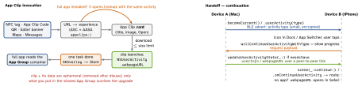

ios-platform · folio
In one line: Both ride on NSUserActivity. An App Clip is a small, separately built slice of
your app that a URL (from a code, tag, link or map) launches without installing the app;
Handoff moves your own current activity to your own nearby device (same iCloud account,
BLE + Wi-Fi). Neither is a deep link, and neither is state restoration.
Download PDF Print view LaTeX source


App Clips
- Target: own bundle id (parent id + suffix, e.g.
.Clip), shipped with the full app; share code via packages, strip the rest with your own#if APPCLIPcompilation condition. - Size (uncompressed binary): 10 MB (up to iOS 15), 15 MB (iOS 16), 100 MB (iOS 17+ only if digital invocations only — no App Clip Code, NFC, QR — and no iOS 16 support; an App Store Connect demo link gets 100 MB with physical codes). Third-party SDKs eat it.
- Experiences (App Store Connect): default (one card) + advanced per URL prefix / location. Domain proof:
appclips:associated domain + AASA. Launch:webpageURLof aNSUserActivityTypeBrowsingWebactivity = your routing key. - Ephemeral notifications:
NSAppClipRequestEphemeralUserNotification→ up to 8 hours without a prompt.NSAppClipRequestLocationConfirmation+APActivationPayload.confirmAcquired(in:)verifies the user is really at the code. - Upgrade:
SKOverlay.AppClipConfiguration(.appStoreOverlayin SwiftUI); the full app inherits only the App Group container. Test:_XCAppClipURLscheme variable; on device, Settings › Developer › Local Experiences.
Handoff & Continuity
- Advertise:
activityTypelisted inNSUserActivityTypes; small plistuserInfo(+requiredUserInfoKeys),title,webpageURL;isEligibleForHandoff(alsoForSearch,ForPrediction). Current viabecomeCurrent()or a responder’suserActivity; refresh lazily withneedsSave+updateUserActivityState(_:). - Requirements: same Apple ID / iCloud, BLE + Wi-Fi, Handoff on, same Team ID and activity type in both apps. Big data: continuation streams (
supportsContinuationStreams) or the cloud. - Continue per scene: cold start →
connectionOptions.userActivities; running →scene(_:continue:). - Web↔native: app → Safari via
webpageURL; Safari → app needs theactivitycontinuation:associated domain (Universal Links useapplinks:). - Universal Clipboard:
UIPasteboarditems reach nearby devices; keep secrets local withsetItems(_:options: [.localOnly: true, .expirationDate: …]). Continuity Camera: iPhone as Mac camera/scanner — nothing to build on iOS.
ArticleView(a)
.userActivity("com.acme.article") { act in // advertise
act.userInfo = ["id": a.id] // what, not data
act.webpageURL = a.webURL // Safari fallback
act.isEligibleForHandoff = true }
.onContinueUserActivity("com.acme.article") { act in
if let id = act.userInfo?["id"] as? String { path.append(id) } }
// clip AND full app: the same entry point
.onContinueUserActivity(NSUserActivityTypeBrowsingWeb) { act in
if let url = act.webpageURL { route(url) } }Four ways back into a screen
| Handoff | same user, other nearby device, in-progress activity |
| Deep link | a URL anyone can send; opens the installed app (else web) |
| State restor. | same device after relaunch (stateRestorationActivity, @SceneStorage) |
| App Clip | a URL when the full app is not installed |
What a clip cannot do
No background: no background URLSession, no Background Modes, no Bluetooth kept while unused.
Silent frameworks (unavailable / empty / error): AppIntents · BackgroundTasks · CallKit · CareKit ·
Contacts(UI) · CoreMotion · EventKit(UI) · FileProvider · HealthKit · HomeKit · MediaPlayer · Messages ·
MessageUI · NearbyInteraction · PhotoKit · ResearchKit · SensorKit · Speech.
Privacy: no SKAdNetwork, no ATT prompt; UIDevice.name / identifierForVendor = "";
location “When In Use” only, reset daily at 4:00; no Face ID; extensions only for Live Activity widgets;
CloudKit (iOS 16+) public database read-only.
Traps
- Quoting “10 MB” without the OS version, or meaning the download size.
- Full app does not handle the clip’s URLs — once installed, every code opens the full app.
- Clip and app share data freely — no: only an App Group; and the clip may vanish.
- Handoff activity never appears: type missing from
NSUserActivityTypes, different Team ID, not current, non-plistuserInfo, BLE off / other iCloud account. - Megabytes in
userInfo; or expecting Handoff to carry your app’s login — it resumes context, not auth. - Reading the pasteboard on launch — iOS 16 asks “Allow Paste”; use
UIPasteControl/detectPatterns.